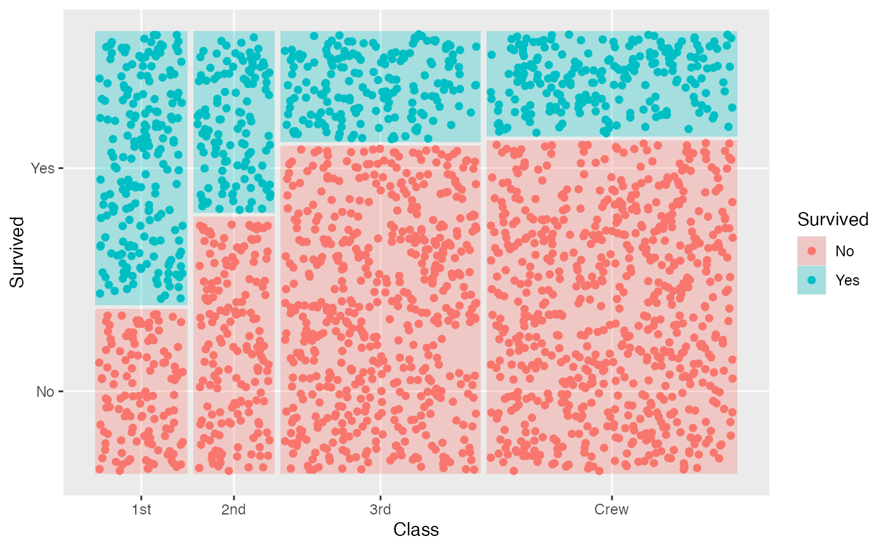

Jittered dots in Mosaic plots.
Source:R/geom-mosaic-jitter.R, R/stat-mosaic-jitter.r
geom_mosaic_jitter.RdA mosaic plat with jittered dots
Usage
geom_mosaic_jitter(
mapping = NULL,
data = NULL,
stat = "mosaic_jitter",
position = "identity",
na.rm = FALSE,
divider = mosaic(),
offset = 0.01,
drop_level = FALSE,
seed = NA,
show.legend = NA,
inherit.aes = FALSE,
...
)
stat_mosaic_jitter(
mapping = NULL,
data = NULL,
geom = "mosaic_jitter",
position = "identity",
na.rm = FALSE,
divider = mosaic(),
show.legend = NA,
inherit.aes = TRUE,
offset = 0.01,
drop_level = FALSE,
seed = NA,
...
)Arguments
- mapping
Set of aesthetic mappings created by
aes(). If specified andinherit.aes = TRUE(the default), it is combined with the default mapping at the top level of the plot. You must supplymappingif there is no plot mapping.- data
The data to be displayed in this layer. There are three options:
If
NULL, the default, the data is inherited from the plot data as specified in the call toggplot().A
data.frame, or other object, will override the plot data. All objects will be fortified to produce a data frame. Seefortify()for which variables will be created.A
functionwill be called with a single argument, the plot data. The return value must be adata.frame, and will be used as the layer data. Afunctioncan be created from aformula(e.g.~ head(.x, 10)).- stat
The statistical transformation to use on the data for this layer. When using a
geom_*()function to construct a layer, thestatargument can be used the override the default coupling between geoms and stats. Thestatargument accepts the following:A
Statggproto subclass, for exampleStatCount.A string naming the stat. To give the stat as a string, strip the function name of the
stat_prefix. For example, to usestat_count(), give the stat as"count".For more information and other ways to specify the stat, see the layer stat documentation.
- position
A position adjustment to use on the data for this layer. This can be used in various ways, including to prevent overplotting and improving the display. The
positionargument accepts the following:The result of calling a position function, such as
position_jitter(). This method allows for passing extra arguments to the position.A string naming the position adjustment. To give the position as a string, strip the function name of the
position_prefix. For example, to useposition_jitter(), give the position as"jitter".For more information and other ways to specify the position, see the layer position documentation.
- na.rm
If
FALSE(the default), removes missing values with a warning. IfTRUEsilently removes missing values.- divider
Divider function. The default divider function is mosaic() which will use spines in alternating directions. The four options for partitioning:
vspineVertical spine partition: width constant, height varies.hspineHorizontal spine partition: height constant, width varies.vbarVertical bar partition: height constant, width varies.hbarHorizontal bar partition: width constant, height varies.
- offset
Set the space between the first spine
- drop_level
Generate points for the max - 1 level
- seed
Random seed passed to
set.seed. Defaults toNA, which means thatset.seedwill not be called.- show.legend
logical. Should this layer be included in the legends?
NA, the default, includes if any aesthetics are mapped.FALSEnever includes, andTRUEalways includes. It can also be a named logical vector to finely select the aesthetics to display.- inherit.aes
If
FALSE, overrides the default aesthetics, rather than combining with them. This is most useful for helper functions that define both data and aesthetics and shouldn't inherit behaviour from the default plot specification, e.g.borders().- ...
other arguments passed on to
layer. These are often aesthetics, used to set an aesthetic to a fixed value, likecolor = 'red'orsize = 3. They may also be parameters to the paired geom/stat.- geom
The geometric object to use to display the data for this layer. When using a
stat_*()function to construct a layer, thegeomargument can be used to override the default coupling between stats and geoms. Thegeomargument accepts the following:A
Geomggproto subclass, for exampleGeomPoint.A string naming the geom. To give the geom as a string, strip the function name of the
geom_prefix. For example, to usegeom_point(), give the geom as"point".For more information and other ways to specify the geom, see the layer geom documentation.
Computed variables
- xmin
location of bottom left corner
- xmax
location of bottom right corner
- ymin
location of top left corner
- ymax
location of top right corner
Examples
data(titanic)
ggplot(data = titanic) +
geom_mosaic(aes(x = product(Class), fill = Survived), alpha = 0.3) +
geom_mosaic_jitter(aes(x = product(Class), color = Survived))

ggplot(data = titanic) +
geom_mosaic(aes(x = product(Class)), alpha = 0.1) +
geom_mosaic_jitter(aes(x = product(Class), color = Survived), drop_level = TRUE)
#> Joining with `by = join_by(x__Class)`
 ggplot(data = titanic) +
geom_mosaic(alpha = 0.3, aes(x = product(Class, Sex), fill = Survived),
divider = c("vspine", "hspine", "hspine")) +
geom_mosaic_jitter(aes(x = product(Class, Sex), color = Survived),
divider = c("vspine", "hspine", "hspine"))
ggplot(data = titanic) +
geom_mosaic(alpha = 0.3, aes(x = product(Class, Sex), fill = Survived),
divider = c("vspine", "hspine", "hspine")) +
geom_mosaic_jitter(aes(x = product(Class, Sex), color = Survived),
divider = c("vspine", "hspine", "hspine"))
 ggplot(data = titanic) +
geom_mosaic(alpha = 0.3, aes(x = product(Class), conds = product(Sex), fill = Survived),
divider = c("vspine", "hspine", "hspine")) +
geom_mosaic_jitter(aes(x = product(Class), conds = product(Sex), fill = Survived),
divider = c("vspine", "hspine", "hspine"))
ggplot(data = titanic) +
geom_mosaic(alpha = 0.3, aes(x = product(Class), conds = product(Sex), fill = Survived),
divider = c("vspine", "hspine", "hspine")) +
geom_mosaic_jitter(aes(x = product(Class), conds = product(Sex), fill = Survived),
divider = c("vspine", "hspine", "hspine"))